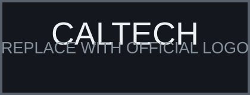
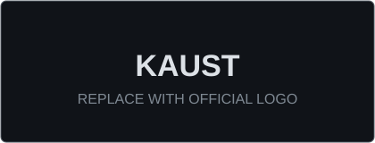
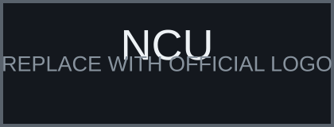
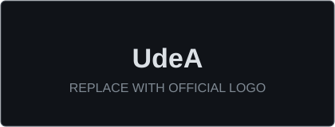
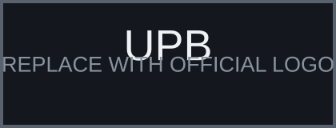
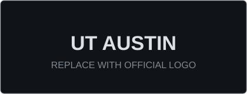

Building aerospace systems that remain capable when conditions stop being ideal.
Aeronautical Engineering graduate and incoming Aerospace Engineering M.S. student focused on safety-critical and resilient autonomy, multi-robot systems, communication-aware robotics, advanced control, and simulation-to-hardware validation.
My research interests center on autonomous aerospace vehicles capable of safely exploring degraded, dynamic, uncertain, and communication-constrained environments.
Research
Caltech · KAUST · NCU · UdeA
Projects
ATMOS · SWARMSYM · VOLTA · DBF
Publications
Papers · Demos · Posters · Research in progress
Certifications & Awards
Fellowships · Scholarships · Exams
CV & Contact
Curriculum Vitae · Email · Professional links
Interests & Hobbies
Aviation · Flying · Exploration · Outdoors
Research, education, and engineering environments that have shaped my work.





